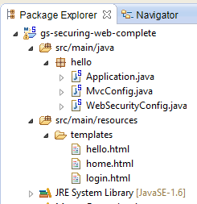
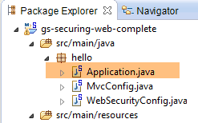

19. Proteger o acesso a um serviço web com o Spring Security
19.1. O papel do Spring Security numa aplicação Web
Vamos contextualizar o Spring Security no desenvolvimento de uma aplicação web. Na maioria das vezes, esta será construída com base numa arquitetura multicamadas, como a seguinte:
 |
- a camada [Spring Security] concede acesso à camada [web] apenas a utilizadores autorizados.
19.2. Um tutorial sobre o Spring Security
Vamos importar novamente um guia do Spring, seguindo os passos 1 a 3 abaixo:
 |
 |
O projeto é composto pelos seguintes elementos:
- na pasta [templates], encontram-se as páginas HTML do projeto;
- [Application]: é a classe executável do projeto;
- [MvcConfig]: é a classe de configuração do Spring MVC;
- [WebSecurityConfig]: é a classe de configuração do Spring Security;
19.2.1. Configuração do Maven
O projeto [3] é um projeto Maven. Vamos analisar o seu ficheiro [pom.xml] para conhecer as suas dependências:
<?xml version="1.0" encoding="UTF-8"?>
<project xmlns="http://maven.apache.org/POM/4.0.0" xmlns:xsi="http://www.w3.org/2001/XMLSchema-instance"
xsi:schemaLocation="http://maven.apache.org/POM/4.0.0 http://maven.apache.org/xsd/maven-4.0.0.xsd">
<modelVersion>4.0.0</modelVersion>
<groupId>org.springframework</groupId>
<artifactId>gs-securing-web</artifactId>
<version>0.1.0</version>
<parent>
<groupId>org.springframework.boot</groupId>
<artifactId>spring-boot-starter-parent</artifactId>
<version>1.2.3.RELEASE</version>
</parent>
<dependencies>
<dependency>
<groupId>org.springframework.boot</groupId>
<artifactId>spring-boot-starter-thymeleaf</artifactId>
</dependency>
<!-- tag::security[] -->
<dependency>
<groupId>org.springframework.boot</groupId>
<artifactId>spring-boot-starter-security</artifactId>
</dependency>
<!-- end::security[] -->
</dependencies>
<properties>
<start-class>hello.Application</start-class>
</properties>
<build>
<plugins>
<plugin>
<groupId>org.springframework.boot</groupId>
<artifactId>spring-boot-maven-plugin</artifactId>
</plugin>
</plugins>
</build>
</project>
- linhas 10-14: o projeto é um projeto Spring Boot;
- linhas 17-20: dependência do framework [Thymeleaf];
- linhas 22-25: dependência do framework Spring Security;
19.2.2. As vistas Thymeleaf
 |
A vista [home.html] é a seguinte:
 |
<!DOCTYPE html>
<html xmlns="http://www.w3.org/1999/xhtml"
xmlns:th="http://www.thymeleaf.org"
xmlns:sec="http://www.thymeleaf.org/thymeleaf-extras-springsecurity3">
<head>
<title>Spring Security Example</title>
</head>
<body>
<h1>Welcome!</h1>
<p>
Click <a th:href="@{/hello}">here</a> to see a greeting.
</p>
</body>
</html>
- linha 12: o atributo [th:href="@{/hello}"] irá gerar o atributo [href] da baliza <a>. O valor [@{/hello}] irá gerar o caminho [<context>/hello], em que [context] é o contexto da aplicação web;
O código HTML gerado é o seguinte:
<!DOCTYPE html>
<html xmlns="http://www.w3.org/1999/xhtml" xmlns:sec="http://www.thymeleaf.org/thymeleaf-extras-springsecurity3">
<head>
<title>Spring Security Example</title>
</head>
<body>
<h1>Welcome!</h1>
<p>
Click
<a href="/hello">here</a>
to see a greeting.
</p>
</body>
</html>
A vista [hello.html] é a seguinte:
 |
<!DOCTYPE html>
<html xmlns="http://www.w3.org/1999/xhtml"
xmlns:th="http://www.thymeleaf.org"
xmlns:sec="http://www.thymeleaf.org/thymeleaf-extras-springsecurity3">
<head>
<title>Hello World!</title>
</head>
<body>
<h1 th:inline="text">Hello [[${#httpServletRequest.remoteUser}]]!</h1>
<form th:action="@{/logout}" method="post">
<input type="submit" value="Sign Out" />
</form>
</body>
</html>
- linha 9: O atributo [th:inline="text"] irá gerar o texto da baliza <h1>. Este texto contém uma expressão $ que deve ser avaliada. O elemento [[${#httpServletRequest.remoteUser}]] é o valor do atributo [RemoteUser] da consulta HTTP atual. Trata-se do nome do utilizador que está ligado;
- linha 10: um formulário HTML. O atributo [th:action="@{/logout}"] irá gerar o atributo [action] da baliza [form]. O valor [@{/logout}] irá gerar o caminho [<context>/logout], em que [context] é o contexto da aplicação web;
O código HTML gerado é o seguinte:
<!DOCTYPE html>
<html xmlns="http://www.w3.org/1999/xhtml" xmlns:sec="http://www.thymeleaf.org/thymeleaf-extras-springsecurity3">
<head>
<title>Hello World!</title>
</head>
<body>
<h1>Hello user!</h1>
<form method="post" action="/logout">
<input type="submit" value="Sign Out" />
<input type="hidden" name="_csrf" value="b152e5b9-d1a4-4492-b89d-b733fe521c91" />
</form>
</body>
</html>
- linha 8: a tradução de «Hello [[${#httpServletRequest.remoteUser}]]!»;
- linha 9: a tradução de @{/logout};
- linha 11: um campo oculto denominado (atributo name) _csrf;
A última vista [login.html] é a seguinte:
 |
<!DOCTYPE html>
<html xmlns="http://www.w3.org/1999/xhtml"
xmlns:th="http://www.thymeleaf.org"
xmlns:sec="http://www.thymeleaf.org/thymeleaf-extras-springsecurity3">
<head>
<title>Spring Security Example</title>
</head>
<body>
<div th:if="${param.error}">Invalid username and password.</div>
<div th:if="${param.logout}">You have been logged out.</div>
<form th:action="@{/login}" method="post">
<div>
<label> User Name : <input type="text" name="username" />
</label>
</div>
<div>
<label> Password: <input type="password" name="password" />
</label>
</div>
<div>
<input type="submit" value="Sign In" />
</div>
</form>
</body>
</html>
- linha 9: o atributo [th:if="${param.error}"] faz com que a baliza <div> só seja gerada se o URL, que apresenta a página de início de sessão, contiver o parâmetro [error] (http://context/login?error);
- linha 10: o atributo [th:if="${param.logout}"] faz com que a tag <div> só seja gerada se o URL, que apresenta a página de início de sessão, contiver o parâmetro [logout] (http://context/login?logout);
- linhas 11-23: um formulário HTML;
- linha 11: o formulário será enviado para o URL [<context>/login], em que <context> é o contexto da aplicação web;
- linha 13: um campo de introdução de dados denominado [username];
- linha 17: um campo de introdução de dados denominado [password];
O código HTML gerado é o seguinte:
<!DOCTYPE html>
<html xmlns="http://www.w3.org/1999/xhtml" xmlns:sec="http://www.thymeleaf.org/thymeleaf-extras-springsecurity3">
<head>
<title>Spring Security Example </title>
</head>
<body>
<div>
You have been logged out.
</div>
<form method="post" action="/login">
<div>
<label>
User Name :
<input type="text" name="username" />
</label>
</div>
<div>
<label>
Password:
<input type="password" name="password" />
</label>
</div>
<div>
<input type="submit" value="Sign In" />
</div>
<input type="hidden" name="_csrf" value="ef809b0a-88b4-4db9-bc53-342216b77632" />
</form>
</body>
</html>
Note-se, na linha 28, que o Thymeleaf adicionou um campo oculto denominado [_csrf].
19.2.3. Configuração Spring MVC
 |
A classe [MvcConfig] configura o framework Spring MVC:
package hello;
import org.springframework.context.annotation.Configuration;
import org.springframework.web.servlet.config.annotation.ViewControllerRegistry;
import org.springframework.web.servlet.config.annotation.WebMvcConfigurerAdapter;
@Configuration
public class MvcConfig extends WebMvcConfigurerAdapter {
@Override
public void addViewControllers(ViewControllerRegistry registry) {
registry.addViewController("/home").setViewName("home");
registry.addViewController("/").setViewName("home");
registry.addViewController("/hello").setViewName("hello");
registry.addViewController("/login").setViewName("login");
}
}
- linha 7: a anotação [@Configuration] transforma a classe [MvcConfig] numa classe de configuração;
- linha 8: a classe [MvcConfig] estende a classe [WebMvcConfigurerAdapter] para redefinir alguns dos seus métodos;
- linha 10: redefinição de um método da classe pai;
- linhas 11-16: o método [addViewControllers] permite associar URL a vistas HTML. São feitas as seguintes associações:
vista | |
/templates/home.html | |
/templates/hello.html | |
/templates/login.html |
O sufixo [html] e a pasta [templates] são os valores predefinidos utilizados pelo Thymeleaf. Podem ser alterados através da configuração. A pasta [templates] deve estar na raiz do Classpath do projeto:
 |
Acima de [1], as pastas [java] e [resources] são ambas pastas de origem (source folders). Isto significa que o seu conteúdo estará na raiz do Classpath do projeto. Assim, no [2], as pastas [hello] e [templates] estarão na raiz do Classpath.
19.2.4. Configuração do Spring Security
 |
A classe [WebSecurityConfig] configura o framework Spring Security:
package hello;
import org.springframework.context.annotation.Configuration;
import org.springframework.security.config.annotation.authentication.builders.AuthenticationManagerBuilder;
import org.springframework.security.config.annotation.web.builders.HttpSecurity;
import org.springframework.security.config.annotation.web.configuration.WebSecurityConfigurerAdapter;
import org.springframework.security.config.annotation.web.servlet.configuration.EnableWebMvcSecurity;
@Configuration
@EnableWebMvcSecurity
public class WebSecurityConfig extends WebSecurityConfigurerAdapter {
@Override
protected void configure(HttpSecurity http) throws Exception {
http.authorizeRequests().antMatchers("/", "/home").permitAll().anyRequest().authenticated();
http.formLogin().loginPage("/login").permitAll().and().logout().permitAll();
}
@Override
protected void configure(AuthenticationManagerBuilder auth) throws Exception {
auth.inMemoryAuthentication().withUser("user").password("password").roles("USER");
}
}
- linha 9: a anotação [@Configuration] transforma a classe [WebSecurityConfig] numa classe de configuração;
- linha 10: a anotação [@EnableWebSecurity] transforma a classe [WebSecurityConfig] numa classe de configuração do Spring Security;
- linha 11: a classe [WebSecurity] estende a classe [WebSecurityConfigurerAdapter] para redefinir alguns dos seus métodos;
- linha 12: redefinição de um método da classe pai;
- linhas 13-16: o método [configure(HttpSecurity http)] é redefinido para definir os direitos de acesso aos diferentes URL da aplicação;
- linha 14: o método [http.authorizeRequests()] permite associar URL a direitos de acesso. São feitas as seguintes associações:
regra | código | |
acesso sem autenticação | | |
Acesso apenas com autenticação |
- linha 15: define o método de autenticação. A autenticação é feita através de um formulário URL [/login] acessível a todos [http.formLogin().loginPage("/login").permitAll()]. O logout também está acessível a todos;
- linhas 19-21: redefinem o método [configure(AuthenticationManagerBuilder auth)] que gere os utilizadores;
- linha 20: a autenticação é feita com utilizadores definidos de forma «estática» [auth.inMemoryAuthentication()]. Um utilizador é aqui definido com o nome de utilizador [user], a palavra-passe [password] e a função [USER]. É possível conceder os mesmos direitos a utilizadores com a mesma função;
19.2.5. Classe executável
 |
A classe [Application] é a seguinte:
package hello;
import org.springframework.boot.autoconfigure.EnableAutoConfiguration;
import org.springframework.boot.SpringApplication;
import org.springframework.context.annotation.ComponentScan;
import org.springframework.context.annotation.Configuration;
@EnableAutoConfiguration
@Configuration
@ComponentScan
public class Application {
public static void main(String[] args) throws Throwable {
SpringApplication.run(Application.class, args);
}
}
- linha 8: a anotação [@EnableAutoConfiguration] solicita ao Spring Boot (linha 3) que efetue a configuração que o programador não terá feito explicitamente;
- linha 9: transforma a classe [Application] numa classe de configuração do Spring;
- linha 10: solicita a análise da pasta da classe [Application] para procurar componentes Spring. As duas classes [MvcConfig] e [WebSecurityConfig] serão assim detetadas, uma vez que possuem a anotação [@Configuration];
- linha 13: o método [main] da classe executável;
- linha 14: o método estático [SpringApplication.run] é executado com a classe de configuração [Application] como parâmetro. Já nos deparámos com este processo e sabemos que o servidor Tomcat incluído nas dependências Maven do projeto será iniciado e que o projeto será implementado nesse servidor. Vimos que quatro instâncias de URL eram geridas por [/, /home, /login, /hello] e que algumas estavam protegidas por direitos de acesso.
19.2.6. Testes da aplicação
Comecemos por solicitar o URL [/], que é um dos quatro URL aceites. Está associado à vista [/templates/home.html]:
 |
A URL solicitada, [/], está acessível a todos. Foi por isso que a obtivemos. O link [here] é o seguinte:
O URL [/hello] será solicitado quando se clicar no link. Este está protegido:
regra | código | |
acesso sem autenticação | | |
Acesso apenas com autenticação |
É necessário estar autenticado para o obter. O Spring Security irá então redirecionar o navegador do cliente para a página de autenticação. De acordo com a configuração apresentada, trata-se da página URL [/login]. Esta página está acessível a todos:
http.formLogin().loginPage("/login").permitAll().and().logout().permitAll();
Assim, obtemos [1]:
 |
O código-fonte da página obtida é o seguinte:
- na linha 7, surge um campo oculto que não consta na página original [login.html]. Foi o Thymeleaf que o adicionou. Este código, denominado CSRF (Cross Site Request Forgery), tem como objetivo eliminar uma falha de segurança. Este token deve ser reenviado ao Spring Security juntamente com a autenticação para que esta seja aceite;
Recordamos que apenas o utilizador user/password é reconhecido pelo Spring Security. Se introduzirmos outra coisa em [2], obtemos a mesma página com uma mensagem de erro em [3]. O Spring Security redirecionou o navegador para o URL [http://localhost:8080/login?error]. A presença do parâmetro [error] provocou a exibição da baliza:
<div th:if="${param.error}">Invalid username and password.</div>
Agora, introduzamos os valores esperados para user/password [4]:
 |
- em [4], identificamo-nos;
- em [5], o Spring Security redireciona-nos para o URL [/hello], pois era o URL que solicitámos quando fomos redirecionados para a página de início de sessão. A identidade do utilizador foi apresentada na seguinte linha de [hello.html]:
A página [5] apresenta o seguinte formulário:
<form th:action="@{/logout}" method="post">
<input type="submit" value="Sign Out" />
</form>
Ao clicar no botão [Sign Out], será efetuado um POST no URL [/logout]. Este, tal como o URL e o [/login], está acessível a todos:
http.formLogin().loginPage("/login").permitAll().and().logout().permitAll();
Na nossa associação URL / vistas, não definimos nada para o URL e o [/logout]. O que irá acontecer? Vamos experimentar:
 |
- em [6], clicamos no botão [Sign Out];
- No [7], vemos que fomos redirecionados para o URL e o [http://localhost:8080/login?logout]. Foi o Spring Security que solicitou este redirecionamento. A presença do parâmetro [logout] no URL fez com que fosse apresentada a seguinte linha na vista:
<div th:if="${param.logout}">You have been logged out.</div>
19.2.7. Conclusão
No exemplo anterior, poderíamos ter escrito primeiro a aplicação web e, só depois, implementado a segurança. O Spring Security não é intrusivo. É possível implementar a segurança numa aplicação web já escrita. Além disso, descobrimos os seguintes pontos:
- é possível definir uma página de autenticação;
- a autenticação deve ser acompanhada pelo token CSRF emitido pelo Spring Security;
- se a autenticação falhar, o utilizador é redirecionado para a página de autenticação, com um parâmetro «error» adicional no token URL;
- se a autenticação for bem-sucedida, o utilizador é redirecionado para a página solicitada no momento em que a autenticação ocorreu. Se se aceder diretamente à página de autenticação sem passar por uma página intermédia, o Spring Security redireciona-nos para o URL [/] (este caso não foi apresentado);
- desautentificamo-nos ao aceder à página URL [/logout] com um POST. O Spring Security redireciona-nos então para a página de autenticação com o parâmetro «logout» no URL;
Todas estas conclusões baseiam-se nos comportamentos por predefinição do Spring Security. Estes comportamentos podem ser alterados através da configuração, redefinindo determinados métodos da classe [WebSecurityConfigurerAdapter].
O tutorial anterior será de pouca utilidade daqui em diante. Iremos, de facto, utilizar:
- uma base de dados para armazenar os utilizadores, as suas palavras-passe e as suas funções;
- uma autenticação por cabeçalho HTTP;
Existem poucos tutoriais sobre o que pretendemos fazer aqui. A solução que será proposta é uma compilação de códigos encontrados aqui e ali.